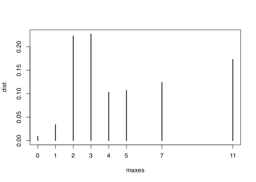

queues <- c(rep(0, 11), rep(1, 5), rep(2, 7), rep(3, 3), 4, 5, 7, 11)
boots <- 1000
maxes <- rep(0, boots)
for (k in 1:boots) {
minisample <- sample(queues, 5, replace = TRUE)
maxes[k] <- max(minisample)
}\[ \newcommand{\Exg}{\operatorname{\mathbb{E}}} \newcommand{\Ex}{\mathbb{E}} \newcommand{\Ind}{\mathbb{I}} \newcommand{\Var}{\operatorname{Var}} \newcommand{\Cov}{\operatorname{Cov}} \newcommand{\Corr}{\operatorname{Corr}} \newcommand{\ee}{\mathrm{e}} \]
25 Plug-in estimation & Bootstrap I
Last time, we defined the empirical distribution of a dataset \(\mathbf x = (x_1, x_2, \dots, x_m)\). We saw that the empirical distribution \(X^*\) has probability mass function \[ p^*(x) = \frac{1}{m} \sum_{j=1}^m \mathbb I_{\{x\}}(x_j) , \] which is simply the proportion of datapoints taking the value \(x_j\).
25.1 The “plug-in” principle
Suppose now that a sample \(\mathbf X = (X_1, X_2, \dots, X_m)\) is an IID sample from a populatoin distribution \(X\) that is either unknown or too difficult to work with directly. How can we find out things about this distribution \(X\)?
Well, we could form the empirical distribution \(X^*\) from these samples, and work with that instead.
We have to be a bit careful here, because there two levels of randomness here.
First, there is the fact that the samples \(\mathbf X = (X_1, X_2, \dots, X_m)\) are random IID samples from \(X\).
Once we have the samples \(\mathbf X\), that fixes the empirical PMF \(p^*\). Then \(X^*\) is itself a random variable, with PMF \(p^*\).
We will write \(\mathbb E\), \(\mathbb P\), \(\operatorname{Var}\) and so on for the first type of randomness – that is, randomness coming from the random variable \(X\). We will write \(\mathbb E_*\), \(\mathbb P_*\), \(\operatorname{Var}_*\) and so on for randomness coming from the empirical random variable \(X^*\) treating the samples \(\mathbf X\) as fixed. So, for example, the expectation \(\mathbb E_*(\phi(X^*))\) is really shorthand for the conditional expectation \(\mathbb E_*(\phi(X^*) \mid \mathbf X)\).
One way to estimate something about the random variable \(X\) is to take the formula involving \(X\), then keep that same formula, but replace the true random variable \(X\) with the empirical random variable \(X^*\). This is called the plug-in principle, and such an estimator is a plug-in estimator – the idea is that we simply “plug \(X^*\) in” to the existing formula.
This is easier to see if we take some examples.
Suppose we wanted to estimate the expectation \(\mathbb EX\) of the true distribution \(X\). To estimate this, we instead plug in the empirical distribution \(X^*\) in place of \(X\) and the empirical expectation \(\mathbb E_*\) in place of the expectation over the random samples \(\mathbb E\). So our estimator is instead \(\mathbb E_*X^*\). We saw last time that \(\mathbb E_*X^*\) is the sample mean \[\overline X = \frac{1}{m} \sum_{j=1}^m X_j .\] So the plug-in estimator for the expectation \(\mathbb EX\) is the sample mean \(\overline X\).
Suppose we wanted to estimate the variance \(\operatorname{Var}(X)\) of the true distribution. Again, we plug in \(X^*\), to instead find \(\operatorname{Var}_*(X^*)\), which we saw last time is \[ \operatorname{Var}_*(X^*) = \frac{1}{m} \sum_{j = 1}^m \big(X_j - \overline X\big)^2 , \] which is very similar to the sample variance of \(\mathbf X\).
Suppose wanted to estimate \(\operatorname{\mathbb E}\phi(X)\) for some function \(\phi\). The plug-in estimator for this is \[\begin{align} \operatorname{\mathbb{E}}_* \phi(X^*) &= \sum_x \phi(x)\,p^*(x) \\ &=\sum_x \phi(x)\, \frac{1}{m} \sum_{j=1}^m \mathbb{I}_{\{x\}}(X_j) \\ &= \frac{1}{m} \sum_{j=1}^m \sum_x \phi(x)\, \mathbb{I}_{\{x\}}(X_j) \\ &= \frac{1}{m} \sum_{j=1}^m \phi(X_j) , \end{align}\] by the same logic we used for the expectation and variance last time. This is the Monte Carlo estimator from the beginning of this module – we have a sample \(X_1, X_2, \dots, X_m\) and we have form the Monte Carlo estimator \(\operatorname{\mathbb E}\phi(X)\). This shows there are deep connections between Monte Carlo estimation and the the empirical distribution and plug-in estimation.
25.2 The bootstrap set-up
OK, we’re now moving on from the empirical distribution to a slightly different but related topic: the bootstrap.
Suppose a statistician is interested in a statistic \(T = T(X_1, X_2, \dots, X_n)\) of \(n\) IID samples from a random variable \(X\). For example, this might be:
Suppose I pick a basketball squad of 12 players at random; what is their average height? Here, \(X\) is the distribution of basketball players’ heights, \(n = 12\), and the statistic is \[ T = T(X_1, X_2, \dots, X_{12}) = \frac{1}{12} \sum_{i=1}^{12} X_i . \]
Suppose I visit The Edit Room cafe 5 times; what’s the longest queue I have to deal with. Here, \(X\) is the distribution of queue lengths at The Edit Room, \(n = 5\), and the statistic is \[ T = T(X_1, X_2, X_3, X_4, X_5) = \max\{X_1, X_2, X_3, X_4, X_5\} . \]
Suppose a supermarket distributor buys 1001 beef steaks; what is the median weight of the steaks? Here \(X\) is the distribution of weights of steaks, \(n = 1001\), and the statistic is \[ T = T(X_1, X_2, \dots, X_{1000}) = \operatorname{median} (X_1, X_2, \dots, X_{1001}) . \]
The statistician is likely to be interested in properties of this statistic. For example, three of the most important things the statistician is likely to want to know are:
The expectation \(\mathbb ET = \mathbb ET(X_1, \dots, X_n)\) of the statistic.
The variance \(\operatorname{Var}(T) = \operatorname{Var}(T(X_1, \dots, X_n))\) of the statistic – or related concepts like the standard deviation.
A prediction interval \([U,V]\) for the statistic, such that \(\mathbb P(T \in [U,V]) = 1-\alpha\).
Now, if the statistician knew the true distribution \(X\), and if it were simple enough to work with, then she could calculate the true values of these. But suppose the distribution is unknown (or too complicated to work with). Instead, the statistician just has \(m\) samples \(\mathbf X = (X_1, X_2, \dots, X_m)\). You could think of these as data measurements that are modelled as coming from the distribution \(X\), or you could think of them as output from a computer program that can sample from \(X\) exactly.
Note that there’s two numbers here: \(n\) is the number of samples required to calculate the statistic \(T = T(X_1, X_2, \dots, X_n)\) once, and \(m\) is the total number of samples we have available. The most common situation is “\(m\) is somewhat bigger than \(n\), although not vastly bigger”, but the mathematical definitions are valid for any \(n\) and \(m\).
The bootstrap method is the following idea:
Take \(n\) samples from the empirical distribution \(X^*\) of \(\mathbf X\). This is equivalent to sampling \(n\) of the values \(X_1, X_2, \dots, X_m\) with replacement. Let’s call these samples \(X^*_1, X^*_2, \dots, X^*_n\). Evaluate the statistic with these samples \[ T^* = T(X_1^*, X_2^*, \dots, X_n^*) . \]
Repeat step 1 many times; let’s say \(B\) times. Keep taking \(n\) of the samples with replacement and evaluating the statistic. We now have \(B\) versions of that statistic \(T^*_1, T^*_2, \dots, T^*_B\).
Use these \(B\) versions of the statistic to get a bootstrap estimate of the expectation, variance, or prediction interval. To estimate the expectation of the statistic \(\mathbb ET = \mathbb ET(X_1, \dots, X_n)\), use the sample mean of the evaluated statistics \(\overline{T^*} = \frac{1}{B} \sum_{k=1}^B T^*_B\). To estimate the variance \(\operatorname{Var}(T)\) use the sample variance \[ \sum{1}{B-1} \sum_{k=1}^B \big(T^*_k - \overline{T^*}\big) .\] We’ll come back to the prediction interval next time.
The bootstrap concept was discovered by the American statistician Bradley Efron in a hugely influential paper “Bootstrap methods: another look at the jackknife” in 1979. The name “bootstrap” comes from the phrase “to pull yourself up by your bootstraps”, which roughly means to make progress without any outside help, in a way that might initially seem impossible – similarly, the bootstrap manages to estimate properties of a statistic by just reusing the same set of samples over and over again. (The “jackknife” in the title of Efron’s paper was and earlier, simpler, less powerful idea along similar lines, named after the multipurpose tool the jackknife.)
25.3 Bootstrap for expectation and variance
Example 25.1 Let’s take the cafe example above. The statistic in question is \[ T = T(X_1, X_2, X_3, X_4, X_5) = \min\{X_1, X_2, X_3, X_4, X_5\} . \] A researcher wants to estimate the expectation of this statistic.
The researcher visits The Edit Room at 30 random occasion and notes the following data.
| Queue length | 0 | 1 | 2 | 3 | 4 | 5 | 7 | 11 | Total |
|---|---|---|---|---|---|---|---|---|---|
| Number of occasions | 11 | 5 | 7 | 3 | 1 | 1 | 1 | 1 | 30 |
We start by taking 5 samples from the empirical distribution – that is, we choose 5 of the datapoints uniformly at random with replacement. Let’s say these are \((0, 1, 4, 4, 5)\). (It turns out we sampled the value 4 twice, even though it only occured once – that does happen sometimes when we’re sampling with replacement.) The value of the statistic for this sample is \[ T_1^* = T(0, 1, 4, 4, 5) = \max \{0, 1, 4, 4, 5\} = 5 .\]
We keep doing this many times – we pick five samples with replacement, and calculate their maximum.
This gives us 1000 realisations of the test statistic. We can use these to look at the distribution of the test statistic:
dist <- table(maxes) / boots
distmaxes
0 1 2 3 4 5 7 11
0.009 0.034 0.223 0.227 0.103 0.107 0.124 0.173 plot(dist)
We can also look at particular figures of interest. For example, the expectation of \(T\) should be close to the sample mean of our \(T^*\)s, and the variance of \(T\) should be close to the sample variance of our \(T^*\)s.
c(mean(maxes), var(maxes))[1] 4.87900 10.50687Next time, we’ll look into bootstrap methods in more detail.